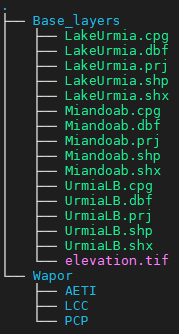
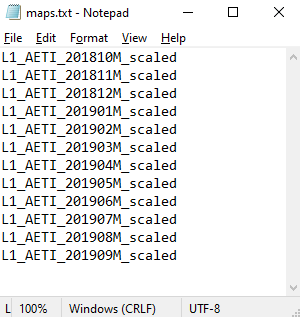
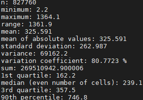

Spatio-temporal analysis with GRASS GIS
IHE Delft Institute for Water Education
The Netherlands
Outline
- Installation steps
- Introduction to GRASS GIS
- Start with GRASS GIS - first steps
- Explore features of GRASS GIS
- Exercise 1 - Seasonal aggregation and statistical analysis
- Exercise 2 - Spatio-temporal analysis of climatic data
Exercise 1 - Seasonal aggregation and statistical analysis
Objectives
Aim:The main objective of this exercise is to explore monthly Actual EvapoTranspiration (AETI) and Precipitation (PCP) data from FAO WaPOR over Urmia lake basin, and extract Land cover based statistics for the crop year 2018/2019.
Data provided:
All data provided cover the entire Urmia Lake Basin
- Monthly AETI (October 2017 to September 2020) at 250 m resolution
- Monthly PCP (October 2017 to September 2020) at 2500 m resolution
- Annual Land cover map (2018,2019,2020) at 250 m resolution
- SRTM elevation - resampled to 250 m
- Base layers - Boundaries of Urmia lake, Urmia lake basin, Miandoab irrigation scheme

Data provided
{kind=link}
Data provided
Step 1: Import data
For this exercise we will use the location/mapset created in previous section: utm38n/ulb_wapor
## Open the Grass GIS in 'utm38n/ulb_wapor' location/mapset
grass78 /mnt/d/grassdata/utm38n/ulb_wapor
## Set the region to ULB
g.region vect=ulb res=250 -a
## remove any Mask
r.mask -r
## We have imported all the vector files (Base_layers) in the previous section.
## Now let us import all the WaPOR data into the grass gis mapset.
## Navigate (cd) to the '' folder provided to you
cd /path/to/Data_ULB/Wapor # change the path to actual path in your computer
## Let us import all the AETI maps first
cd AETI
## List all the maps in the folder
ls
## let us use a 'for' loop to import all the maps in to GRASS GIS mapset in one go.
for i in `ls *.tif`; do
out=`echo ${i}|cut -d. -f1`
r.import in=${i} out=${out} extent=region resolution=region
done
## press enter
## Now Let us import all the precipitation maps
cd /path/to/Data_ULB/Wapor/PCP
## let us use a 'for' loop to import all the maps in to GRASS GIS mapset in one go.
for i in `ls *.tif`; do
out=`echo ${i}|cut -d. -f1`
r.import in=${i} out=${out} extent=region resolution=value resolution_value=2500
done
## press enter
## Now Let us import all the Land cover maps
cd /path/to/Data_ULB/Wapor/LCC
## let us use a 'for' loop to import all the maps in to GRASS GIS mapset in one go.
for i in `ls *.tif`; do
out=`echo ${i}|cut -d. -f1`
r.import in=${i} out=${out} extent=region resolution=region
done
## press enter
## below command list the raster maps AETI of year 2019
g.list rast mapset=. pattern=L1_AETI_2019*|cat
## Change the pattern above to select sub samples of maps
Step 2: Apply scale factor
Both AETI and PCP needs to be scaled by a factor of 0.1 as per the WaPOR documentation before using for analysis. Below code apply the scale to all the maps in one go using a for loop. This time we want to restrict the data within Urmia lake basin boundary. So we apply a mask, before applying scale factor.
## Set the region to ULB
g.region vect=ulb res=250 -a
## Apply a mask to restrict further analysis to ULB
r.mask vect=ulb --o
## List all the AETI maps in Grass mapset
g.list rast mapset=. pattern=L1_AETI*|cat
## let us use a 'for' loop to apply scale factor to all the AETI maps in the mapset in one go.
for i in `g.list rast mapset=. pattern=L1_AETI*|cat`; do
r.mapcalc "${i}_scaled = ${i} * 0.1"
done
## press enter
## List all the PCP maps in Grass mapset
g.list rast mapset=. pattern=L1_PCP*|cat
## let us use a 'for' loop to apply scale factor to all the AETI maps in the mapset in one go.
for i in `g.list rast mapset=. pattern=L1_PCP*|cat`; do
r.mapcalc "${i}_scaled = ${i} * 0.1"
done
## press enter
Step 3: Aggregate to seasonal maps
Let us now aggregate the AETI and PCP maps to compute annual maps covering a crop year. Let us consider the crop year from October to September (next year). Below code compute the total AETI and PCP for the year 2017/18.
## Set the region to ULB
g.region vect=ulb res=250 -a
## Apply a mask to restrict further analysis to ULB
r.mask vect=ulb --o
## List all the AETI maps in Grass mapset
g.list rast mapset=. pattern=L1_AETI*scaled|cat
## select the maps you want to aggregate and save it into a text file using notepad.(see below screenshot)
## Assuming the file with map names is maps_aeti.txt
## below code aggregate the maps using the function "sum"
r.series file=maps_aeti.txt out=AETI_annual_2017_18 method=sum
## List all the PCP scaled maps in Grass mapset
g.list rast mapset=. pattern=L1_PCP*scaled|cat
## select the maps you want to aggregate and save it into a text file using notepad.(see below screenshot)
## Assuming the file with map names is maps_pcp.txt
## below code aggregate the maps using the function "sum"
r.series file=maps_pcp.txt out=PCP_annual_2017_18 method=sum
## press enter

Input text file with input map names
{kind=link}
Input text file with input map names
Step 4: Univariate statistics
Let us now find the univariate statistics of the Annual AETI and PCP maps
# Compute univariate statistics of the annual maps
r.univar -e AETI_annual_2017_18
r.univar -e PCP_annual_2017_18
## press enter

Univariate statistics results of annual AETI 2017/18
{kind=link}
Univariate statistics results of annual AETI 2017/18
Step 5: Find the land cover area
Let us now find the surface area of each land cover type in ULB as per WaPOR LCC map of 2018.
## Set the region to ULB
g.region vect=ulb res=250 -a
## Apply a mask to restrict further analysis to ULB
r.mask vect=ulb --o
# First list all the LCC maps
g.list rast mapset=. pattern=L1_LCC*|cat
# First let us assign category names to each land cover id as per WaPOR Catalog
r.category map=wapor_LCC_mean_reclass rules=rules_reclass.txt sep=comma
# A text file with category details are developed and provided to you as 'rules_lcc.txt' inside 'Base_layers' folder.
r.category map=L1_LCC_2018 rules=rules_lcc.txt sep=comma
# Below command compute the surface area of each Land cover type in hectares.
r.report L1_LCC_2018 units=k -e -n -h
Step 6: Find the AETI and PCP stats per Land cover type
Let us now find the Mean and median annual AETI and PCP per land cover type.
## Set the region to ULB
g.region vect=ulb res=250 -a
## Apply a mask to restrict further analysis to ULB
r.mask vect=ulb --o
# Use the below univar command with zones and -t flag to compute stats per land cover type
# For Annual AETI
r.univar -t AETI_annual_2017_18 zones=L1_LCC_2018 sep=, output=AETI_stats_2017_18.csv
# For Annual PCP
r.univar -t PCP_annual_2017_18 zones=L1_LCC_2018 sep=, output=PCP_stats_2017_18.csv
Step 7: Export the maps to Geotiff format
Once you have the annual AETI and PCP maps, it might be useful to have them in other formats like Geotif (.tif). With raster maps in .tif format, you can open them in any other software like QGIS to create map layouts or further analysis
## navigate to the output folder where you want the exported raster maps in tif format
cd /mnt/path/to/outputfolder
g.region vect=ulb res=250 -a
## Apply a mask to restrict further analysis to ULB
## If a mask is applied the exported map will be also clipped to the mask
r.mask vect=ulb --o
# Use the below commands to export the annual AETI and PCP to geotiff (.tif)
# For Annual AETI
r.out.gdal in=AETI_annual_2017_18 out=AETI_annual_2017_18.tif
# For Annual PCP
r.out.gdal in=PCP_annual_2017_18 out=PCP_annual_2017_18.tif
Your tasks
Follow the above steps (3-6) to compute Annual AETI and PCP maps for the years 2018/19 and 2019/20.- Compute univariate statistics of Annual AETI and PCP of crop years 2018/19> and 2019/20
- Compute Landcover based statistics of Annual AETI and PCP of crop years 2018/19> and 2019/20
- Prepare maps of Annual AETI and PCP with a nice layout (in QGIS?)
- Submit a short report (max 3 pages) with the results in OCW platform
midnight 12 July 2021
Last changed: 2021-07-07
GRASS GIS manual main index | Topics index | Keywords Index | Full index | Raster index | Vector index | Temporal index |

Licensed under a Creative Commons Attribution-ShareAlike 4.0 International License - Thanks to Vaclav Petras for the style.